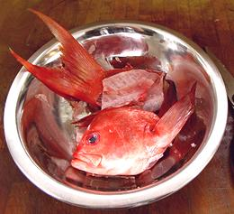
Making Fish Stock
Everywhere
Seafood soups can be very flavorful and well accepted, both at dinner and
as buffet party dishes. They are not made often because of the
inconvenience of making the fish stock upon which they are based. This
page will show you how to make fish stock well ahead, when convenient,
and have it on hand when you want to make a seafood soup.
Fish stock is made from the off-cuts when you prepare whole fish
for recipes. It may also include other seafood, mainly shrimp shells
and/or shrimp heads. Most recipes also include vegetables, herbs and
spices, but I make mine plain because I usually don't know in advance
what I will use the stock for. Those additional flavorings are easily
added when the stock is used.
Equipment
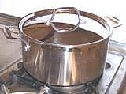
Pots:
Of course you need pots - in various
sizes. Keep in mind that a pot that's a bit too big is a minor annoyance
- a pot that is too small is a disaster. I prefer light weight stainless
pots with a thick multi-ply bottom, like the one in the photo. The thick
bottom isn't needed for stock, but I can use the same pot for soup,
where the thick bottom is often very desirable, especially if there is
barley in the soup.
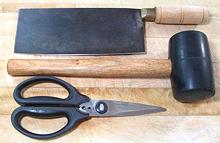
Cleaver Knife, Mallet & Kitchen Shears:
These items have already been shown on the page
Cleaning &
Filleting Round Fish, but are also used here. mainly for cutting up
skeletons and fish heads. This set includes a razor sharp Chinese Cleaver
Knife, a Soft Faced Mallet and Kitchen Shears. These tools are also very
useful for many non-fish tasks in the kitchen.
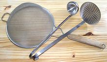
Strainer, Skimmer & Ladle:
These
are all standard kitchen tools with many non-fish uses. The flat skimmer
is used to skim off scum as it rises, just as the pot comes to
a boil. The strainer is used to separate the solids (discarded) from the
liquid, and the ladle for moving sock from pot to jar (it's hard to
pour directly if the pot is quite full).
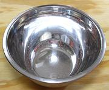
Deep Bowl:
Again, standard kitchen equipment
unrelated to fish. You need this in the sink under the strainer when you
strain the solids out of the stock (otherwise the stock will just pour
down the drain, duhh!). Let the stock sit for awhile in the bowl so
small solids sink to the bottom and fat rises to the top before pouring
into the separator. Of course, a pot could also be used for this.
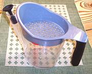
Gravy Separator:
This is one of the greatest kitchen
tools ever invented. Yes, you can use it to degrease gravy, but mine
is used far and away more often for defatting soup stock. No, you
can't get as clean a stock skimming, only by taking an extra day to
refrigerate the stock - unacceptable. Shown is the Oxo 4 cup, which
features a rubber plug to help keep fat out of the spout. That blue
strainer it comes with is worthless - the holes are too big and it's
capacity is too small. You can safely toss it.
The only deficiency of this device is the lack of any tool for cleaning
the inside of the spout - and I'm pretty fussy about that sort of thing.
I purchased a cheap bulb baster which came with a cleaning brush that
works just fine in the spout.
Wet the plug and put it in before filling the separator. Let it sit
for a bit for the fat to rise to the top, then pull the plug and decant
about 2/3 of the contents. Replug and refill. Let sit, then decant again.
For the last batch, pour slowly, watching the spout. Tilt up to stop flow
the moment you see a bubble of fat enter the spout. Store the plug inside
the bowl, not stuck in the spout, or it eventually won't seal well.
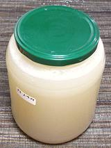
Jars:
I keep various sizes of jars for storing soup
stock, most with the 3 inch opening, but some smaller ones as well.
The photo shows a 4 cup, but 3 cup, 2 cup and 5 cup versions are also
available for this size lid. I prefer lids with a safety dimple (barely
visible in the photo) so I can be certain the seal is good. I wash my
jars and lids well with a disinfecting cleanser.
Jars from most commercial canned goods, such as sauerkraut, pickles
and the like are made of heat resistant glass and will not crack when
hot stock is poured in, though I give the stock a couple of minutes
to cool below boiling. The only time I remember a cracked jar was some
years back with an old Clausen's sauerkraut jar (but the stock was
saved - it just cracked, and any glass chips would quickly sink to the
bottom anyway).
Making Fish Stock
|
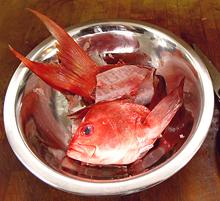
Fish Pieces
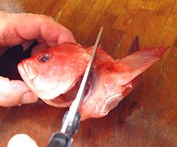
Separate the Collar
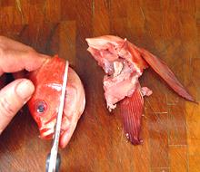
Cut off the Jaw
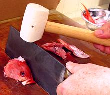
Split the Head
|
Buy Whole Fish: These should be fish suitable for fish
stock. You will find recommendations in the "Details and Cooking" pages
for individual types of fish. These pages are accessible from our
Varieties of Fish page
(very large page). In general, these fish will be light to medium
flavor and color with low oil content. Avoid dark oily fish such as
mackerel, tuna, bonito, etc.Collect Ingredients: Set aside all your fish pieces
as you fillet the fish. Keep them well chilled while you work. You
should include Heads (with gills removed), Skeleton, any miscellaneous
Bones and Meat, and Fins. DO NOT include skins unless the "Details and
Cooking" page for that particular fish says they are OK. These pages
are accessible from our Varieties
of Fish page (very large page).
You can also include shrimp shells and/or heads, and if you will be
including vegetables, herbs and spices, they should also be prepared
at this time for inclusion - generally chopped small. I don't include
vegetables and herbs at this time, giving me more flexibility when I
use the stock - these flavorings are easy to include at time of use,
which may be months later.
Cut up the Heads: Refer to the photos at the left.
- Make a cut with your kitchen shears right under the front of the
jaw to free the collar. Bend it back and use the shears to cut it
free from the back of the head. Cut it into two halves.
- Starting with the point of the shears in the mouth, cut the lower
jaw away from the head on both sides.
- Set the head upright and facing you with an accusing gaze. Place
the edge of your sharp Chinese Cleaver knife right along the center
of the head, between the eyes. Drive it through the head with a
soft faced mallet. Don't worry about brains splattering all over -
fish are not exactly intellectual giants - they hardly have any
brains.
- Give everything a final rinse, removing any gooy stuff.
Fill the Pot: Put all ingredients in a pot, fish
parts, shrimp shells / heads if used, and vegetables if used. Pour
in cold water to cover the ingredients well. Bring to a boil
uncovered (otherwise it may foam over).Skim: As the pot starts to boil, use the flat
skimmer to remove any foamy sludge that rises. Some fish will
produce a lot of sludge and some will produce almost none.Simmer: As soon as the pot is boiling, put it over
low flame and simmer slowly for about 40 minutes - at least 30 and
less than 50 minutes.Strain: Arrange the wire strainer over the deep
bowl and pour the contents of the pot through the strainer. Discard
all solids.Stand: Let the bowl stand quietly for awhile so the
small solids sink to the bottom and the oil rises to the top.
Defat: Using your gravy separator as described in
the "Equipment" section, remove the oil, and leave the small solids
in the bottom of the bowl.Jar: Bring the stock to a boil, stand covered about
1 minute, then pour into jars as described above. Let cool
thoroughly and check that the seal is good. Refrigerate until needed.
|
The Storage Problem
Fish stock is highly perishable, and keeps in the refrigerated for
only a few days. Many suggest pouring stock into ice cube trays,
freezing, then bagging the cubes for future use. Problem: the packing
density of cubes is very poor, and your freezer compartment is probably
already full.
Solution:
Here's what I do now, and it works
really well, at least for me.
- Make the stock (method will be found above).
- Strain the stock, discarding all the solids.
- While it is still hot, use your gravy separator to remove all the
oil. This is very easy to do - see the "Equipment" section.
- Put stock in a clean sauce pan and bring to a boil uncovered
(otherwise it may foam over). Cover, and let cool just a couple minutes.
- Pour into jars it will just fit into with 1/2 inch or less of air
space. Screw down the lid tight and set aside on the counter.
- When thoroughly cool, check the lid to make sure the seal is good
and it's sucked down tight. If the lid has any spring, re-boil and
re-jar, maybe using a different lid. See the "Equipment" section
for more on jars.
- Apply a sticker with what it is and what date it was made - no, you
are not going to remember. Refrigerate.
How long will this stock keep in the refrigerator? I don't know, I
discard any that is approaching a year old - haven't encountered a bad
jar yet (one sniff would tell you if it was bad). Of course, if you find
a jar where the lid isn't sucked down tight and has some spring to it,
it should be discarded immediately.
When you use some, you pry up the edge of the lid to break the
seal so you can get the lid off easily (I use an antique Lucky Lager
church key (most church keys sold today are too thick), but some
recommend the pointy end of a spoon. If you have some left it must be
used within a few days or reboiled and stored in a smaller jar.
gof_stock1 140226 ajg - www.clovegarden.com
©Andrew Grygus - agryg@aaxnet.com - Linking to and
non-commercial use of this page is permitted.